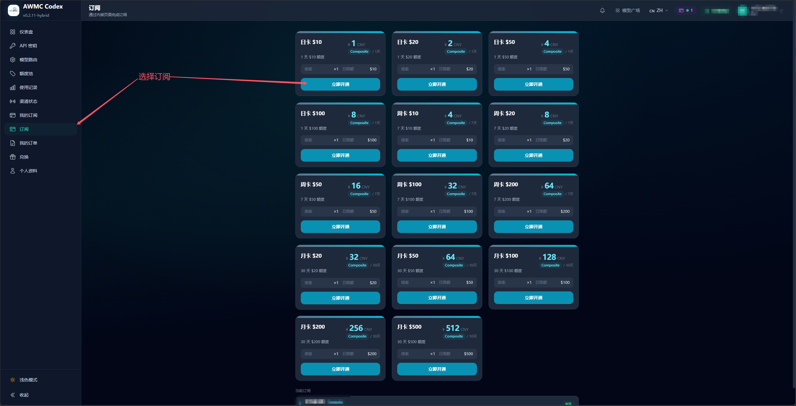
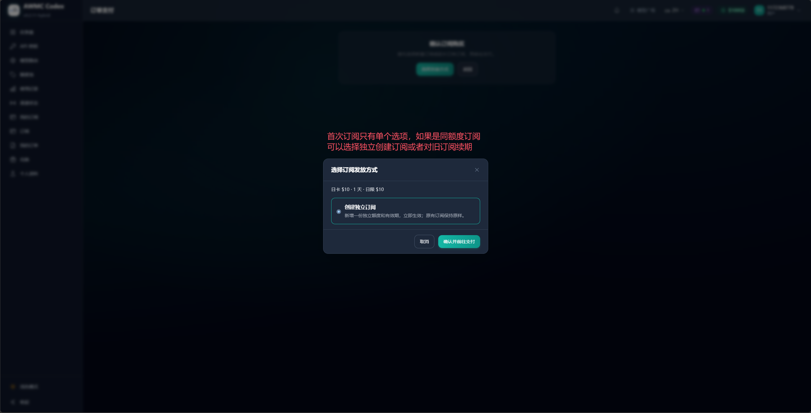
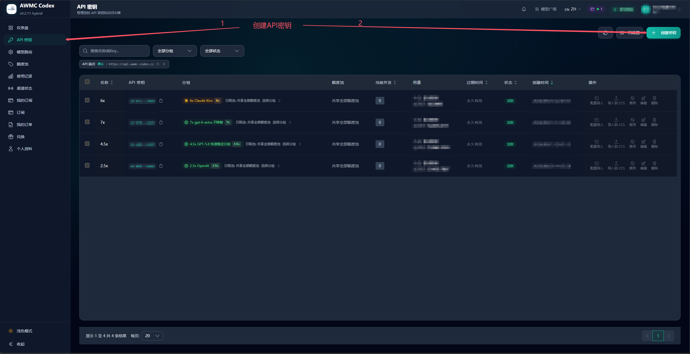
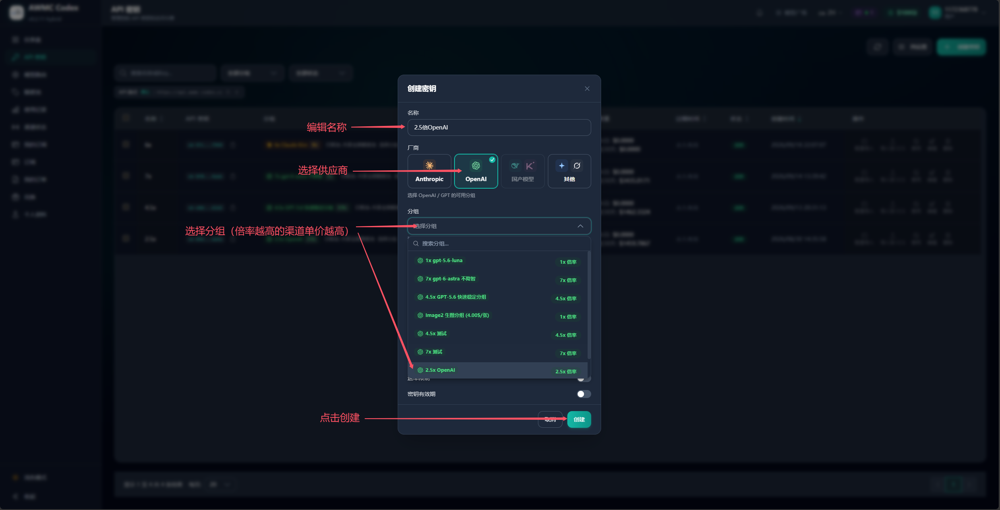
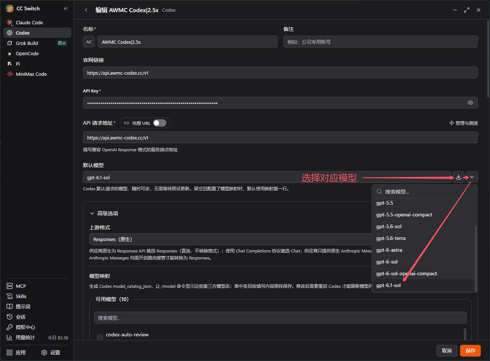
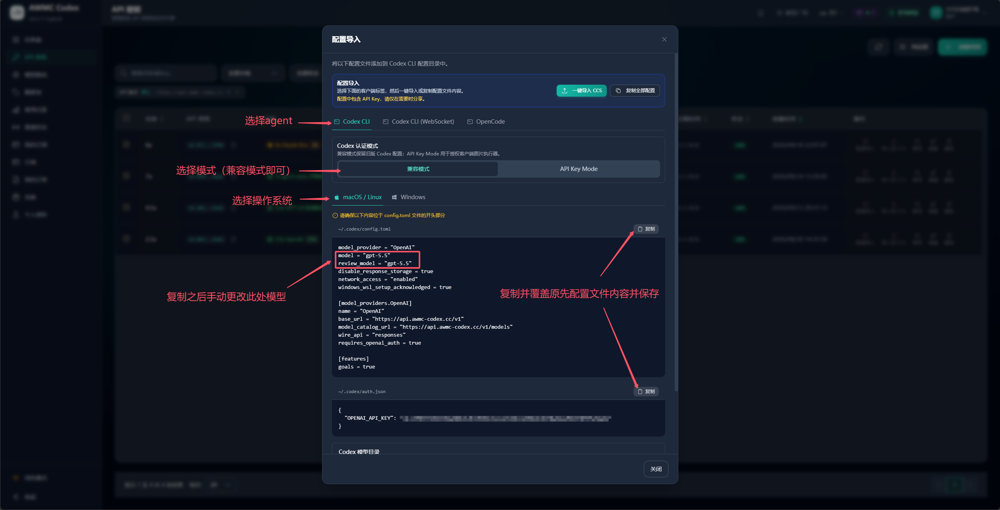
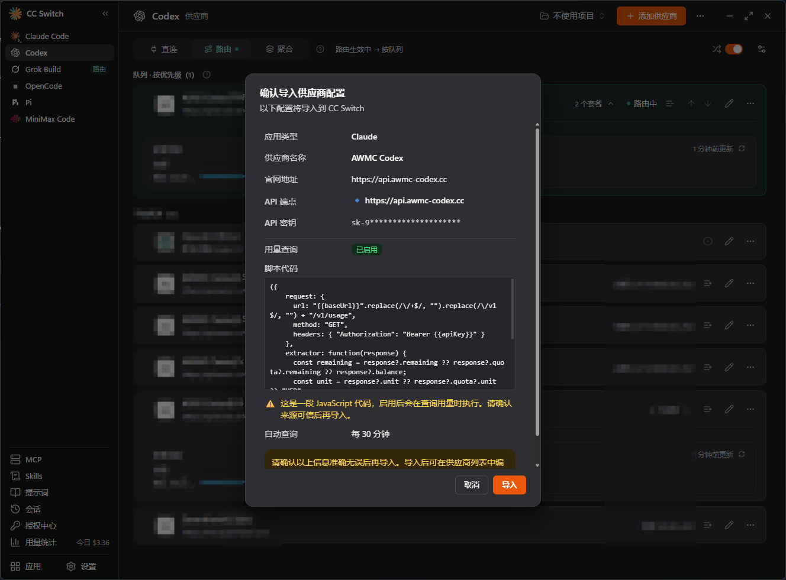
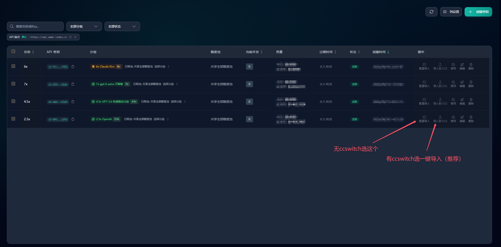

开始使用
- 打开 AWMC Codex，登录账号；没有账号时按页面提示注册。
- 在“订阅”页选择适合自己的套餐并完成支付，或在“兑换”页使用兑换码。
- 在“API 密钥”页创建密钥，选择服务分组。
- 把 API 地址、密钥和模型填入支持 OpenAI API 的客户端。
首次使用建议先创建一个 API Key，并用少量请求确认客户端配置正确。
开通或兑换订阅
- 从侧边栏打开“订阅”，比较套餐显示的有效期、额度和价格，再点“立即开通”。套餐内容和价格以页面实时显示为准。
- 如果已有同分组订阅，付款前会出现订阅发放方式选择窗口。选择“创建独立订阅”会新增一份独立额度和有效期；选择“延长有效期”会续期所选订阅并保留该订阅已用额度。
- 确认选择后再继续支付。支付成功后可在“我的订阅”查看权益。
- 兑换订阅时，在“兑换”页输入兑换码；如果该兑换码对应的分组已有订阅，同样先选择创建独立订阅或续期目标，再确认兑换。


创建 API Key
- 打开侧边栏“API 密钥”，点击右上角“创建密钥”。
- 填写容易识别的名称，选择供应商 OpenAI，再选择分组。分组决定可用模型和计费倍率；倍率越高，通常每次请求消耗越多。
- 如需限制密钥有效期，可开启有效期设置；完成后点击“创建”。
- 创建成功后复制并妥善保存 API Key。不要将密钥发到群聊、截图或公开仓库。


配置客户端
本站提供 OpenAI 兼容 API。常用 API 地址如下：
https://api.awmc-codex.cc/v1
在客户端的供应商设置中填写：
- API Key：刚创建的密钥。
- Base URL / API 地址：上面的地址。若客户端分别要求“官网链接”和“API 请求地址”，API 请求地址填写该地址。
- 模型：选择所选分组允许的模型。模型名称必须与分组和上游支持情况相符。
也可以在“API 密钥”列表中使用“配置导入”，选择 Codex CLI、Codex CLI（WebSocket）或 OpenCode，再选择操作系统。页面会生成对应配置；复制后按弹窗中的文件路径保存，并把示例模型替换成你准备使用的模型。


使用 CC Switch 导入
- 在“API 密钥”列表找到要使用的密钥。
- 如果已安装 CC Switch，点击该行“导入到 CCS”；如果使用其他客户端，点击“配置导入”。
- 在确认窗口核对供应商、API 地址和密钥所属账号，再点击导入。
- 回到 CC Switch，选择 AWMC Codex 供应商并启用对应路由，然后在目标客户端中选择模型。
配置导入会把 API Key 写入本机客户端配置。只在自己的可信设备上操作，并避免把含密钥的配置文件发给他人。

查看订阅和用量
- “我的订阅”用于查看各份订阅的分组、剩余额度和到期时间。
- “使用记录”用于检查请求、模型和额度消耗。
- “API 密钥”用于管理密钥状态、分组和客户端配置导入。
- 购买订单可从“我的订单”查看；兑换码从“兑换”页使用。

常见问题
401 / Unauthorized
检查 API Key 是否复制完整、是否被禁用，以及客户端是否将它放在 API Key/Authorization 字段中。
404 / 模型不可用
检查模型名称拼写，并确认所选分组包含该模型。本站会根据上游账号的实际状态路由请求；某个上游暂不可用时，稍后重试或选择其他可用模型。
429 / 额度或请求频率限制
在“我的订阅”和“使用记录”查看剩余额度与消耗。若额度已用完，请按站内提供的方式购买或兑换订阅。
客户端无法连接
确认 Base URL 为 https://api.awmc-codex.cc/v1，网络可以访问本站，并且客户端选择了与配置匹配的 OpenAI/Responses 协议。
安全提示
- API Key 等同账号凭证。不要公开分享；怀疑泄露时，立即在“API 密钥”页禁用或删除并创建新密钥。
- 不要在公开仓库提交包含真实密钥的配置文件。截图前遮挡密钥、邮箱、订单号和个人资料。
- 只通过本站官方页面和可信客户端配置密钥。